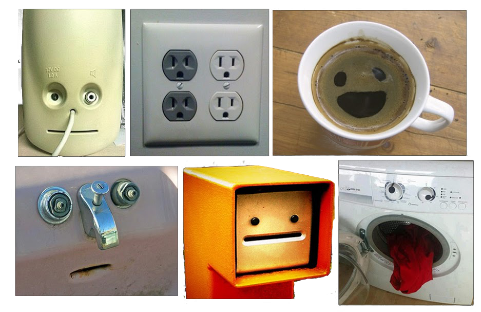

Anthropomorphism: conclusions
The conclusion of this chapter states: even if the agent or product does not have a humanoid embodiment, the psychological effect of pareidolia can be used to imply a human face and encourage a human-like or social interaction. Through studies of robot facial features and product designs, the minimum facial features required are eyes, which ideally should be as large and detailed as possible. The addition of eyebrows, nose, mouth, and cheeks will greatly enhance the anthropomorphic effect and can be used in emotional communication.
